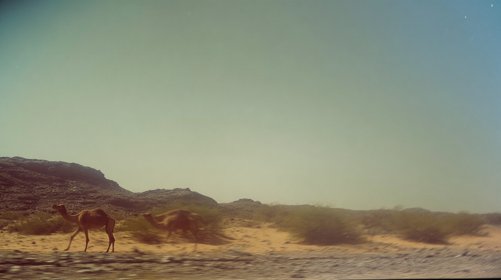
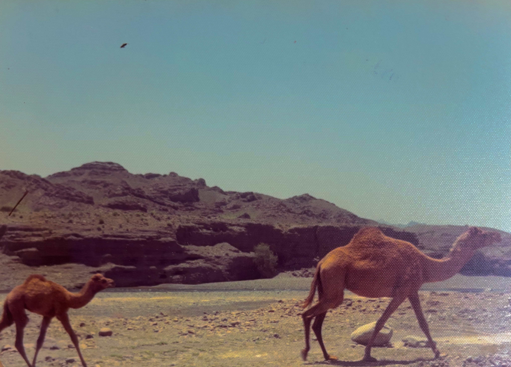
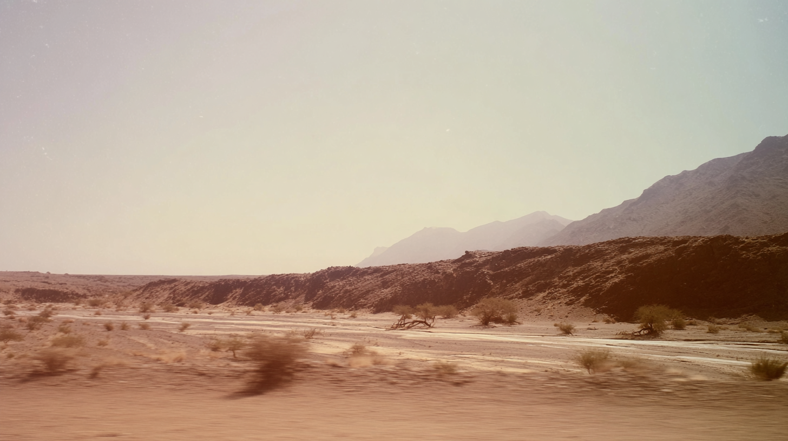
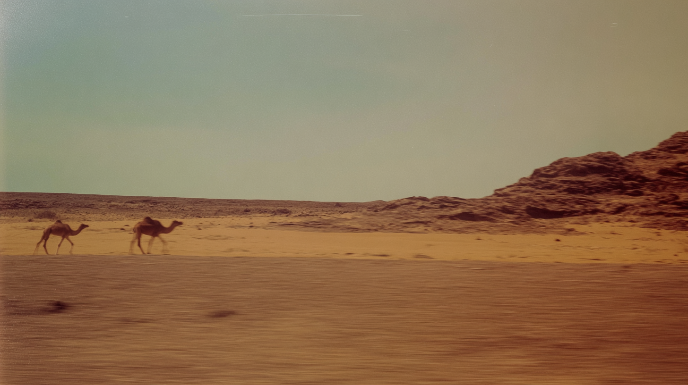
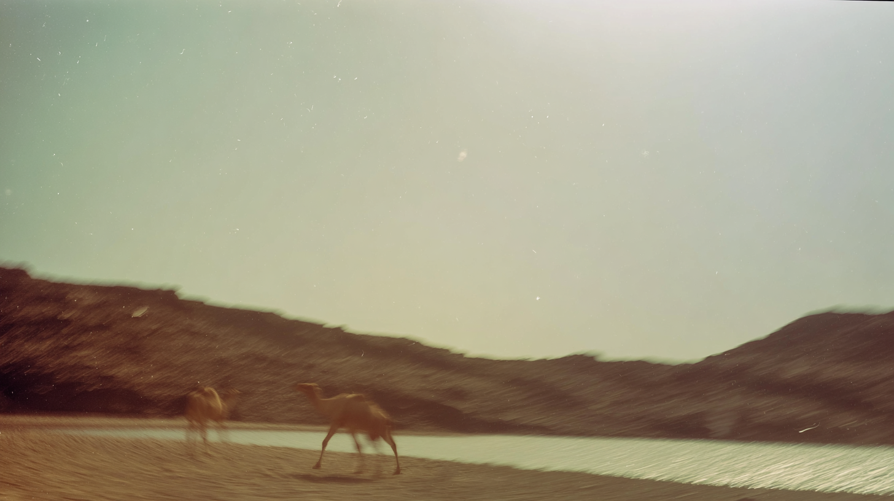

Two camels move across a sandy desert landscape with low rocky hills in the background, captured with subtle motion blur from a moving vehicle.
Blurred camels walk beside a body of water at the base of dark hills, photographed with a soft, cinematic haze and visible motion drag.
A wide arid plain with scattered shrubs and distant layered mountains stretches beneath a pale sky, viewed from a moving car with gentle foreground blur
desert scene shot from a moving car, subtle shutter drag effect, realistic natural movement, modern cinematic film look. muted natural colours, low contrast grading, soft highlights, hazy atmosphere, arid heat. warm sky, soft warm reflections of the sand. Light film grain, organic texture, low digital sharpness, Shot like contemporary cinema, realistic, emotional, alive.
vast empty desert plain with distant camels in a rocky landscape, filmed from a slow-moving vehicle, subtle shutter drag effect, gentle natural motion blur along road edge, modern cinematic film aesthetic, muted sand and sky tones, low contrast grading, soft luminous highlights, atmospheric haze, dry heat presence, warm sky wash, soft warm sand reflections, light film grain, organic texture, low digital sharpness, contemporary cinema realism, contemplative and expansive